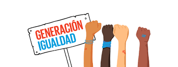

Las luchas actuales de la mujer ante un mundo desigual
Las mujeres son la mitad de la población mundial y tienen los mismos derechos que los hombres.
Tienen derecho a no sufrir discriminación ni violencia por el hecho de haber nacido mujeres. Tienen derecho a no ser maltratadas ni asesinadas por sus parejas o ex parejas, a no vivir con el miedo constante a ser agredidas sexualmente con impunidad, a no ser discriminadas en el trabajo ni en el acceso a los recursos económicos y de producción, a vestirse como quieran, a estudiar lo que quieran, a decidir sobre su cuerpo, su sexualidad y su reproducción sin coacción ni presiones. Tienen derecho a expresarse libremente, a hablar alto y reclamar sus derechos sin miedo a ser encarceladas, perseguidas o asesinadas por ello.
«Todos los seres humanos nacen libres e iguales en dignidad y derechos». Artículo 1, Declaración Universal de los Derechos Humanos, 10 de diciembre de 1948
Hace 70 años, las naciones del mundo adoptaron el compromiso de fomentar los derechos humanos y libertades sin distinción de sexo, raza, idioma y religión. Desde entonces se han puesto en marcha numerosos mecanismos y leyes, a nivel internacional, regional y nacional, para asegurar que dichos derechos y libertades llegan de manera efectiva a esa mitad de la población, las mujeres.
- El primer gran hito fue la aprobación, en 1979, de la Convención sobre la Eliminación de Todas las Formas de Discriminación contra la Mujer, instrumento clave de Naciones Unidas en la protección de los derechos de las mujeres.
- También han tenido enorme relevancia las sucesivas resoluciones del Consejo de Seguridad de la ONU (ocho hasta la fecha, desde la resolución 1325 del año 2000) que reconocen el impacto desproporcionado de los conflictos en las mujeres y las niñas y promueven su participación en el mantenimiento y consolidación de la paz, dada su contribución clave en dichos procesos.
- Un nuevo paso hacia la igualdad entre hombres y mujeres fue la creación, en 2010, de ONU Mujeres, organismo de Naciones Unidas centrado en impulsar la igualdad de género en el mundo.
- En Europa, en 2011 se aprobó el Convenio de Estambul, con el objetivo de abordar todas las formas de violencia hacia las mujeres.
- Por su parte, el Foro Económico Mundial hizo un llamamiento para que 2018 fuera “el año en que las mujeres prosperen”, dando luz a otro ámbito, el laborar y económico en el que también son discriminadas.
- España dio un gran paso al aprobar en 2004 una ley integral contra la violencia de género, y en 2017 se acordó un pacto de Estado orientado a abordar las deficiencias aún existentes en la protección efectiva de las mujeres.

¿Qué quieren las mujeres?
La agenda de las reivindicaciones es amplia, pero podría sintetizarse en los siguientes puntos en torno de los cuales se abren las expectativas de transformación de las relaciones de género en América Latina:
- Ampliación del estatuto de ciudadanía, se trata de contemplar el haz de derechos y la plenitud de su goce. Usufructuar de la ciudadanía significa que no hay cortapisas en los derechos civiles, cívicos, sociales y personalísimos.
- Igualdad en la vida cívica mediante la paridad en la postulación y elección. Ningún género puede tener más posibilidades que otro en el orden representacional y debería también asegurarse la igualdad en la composición del conjunto de las instituciones de la gobernabilidad. Deben asegurarse sistemas políticos que permitan la igualdad de la participación y la factibilidad de idénticas expectativas en la competencia por los cargos.
- Derecho a la soberanía del cuerpo, a decidir libremente en materia reproductiva, lo que implica despenalizar el aborto; y también derecho a la accesibilidad a buenos servicios de salud en cualquier caso, tanto para la voluntad de la maternidad como para su revocación de los mandatos del “viejo orden” pro reproductivo.
- Reconocimiento, en toda América Latina, a dos conquistas fundamentales que Argentina logró en estos años junto con algunos pocos países: matrimonio igualitario y derecho a la identidad de género.
- Derecho a una vida libre de toda clase de violencias. La erradicación de la violencia depende de dispositivos de prevención y sanción públicos, pero también de las nutrientes de las primeras formas de sociabilidad. Familias y escuelas tienen mucho que hacer para forjar nuevas simbologías igualitarias entre los sexos.
- Igualdad de oportunidades en el mercado laboral, eliminación completa de las barreras sexistas que menguan las retribuciones de las mujeres y les impiden desempeñarse en puestos de mayor productividad y decisión.
No hay vida digna si faltan el reconocimiento y la equidad.
De la misma manera en nuestra facultad hay especialistas en la temática y múltiples trabajos, talleres invitan a revertir y luchar por los problemas profundos vinculados a la condición de mujer, es el área de Géneros y su vinculación con la educación desde los marcos legales. Además, orienta a cualquier persona con alguna problemática relacionada con géneros y la deriva -si corresponde- a otro organismo de la Universidad o fuera de ella.Funciona en articulación con la Consejería que ya existe en la Secretaría de Bienestar Universitario, y con el Instituto de Estudios de Géneros y Mujeres del Rectorado y el Programa Mujeres Libres.